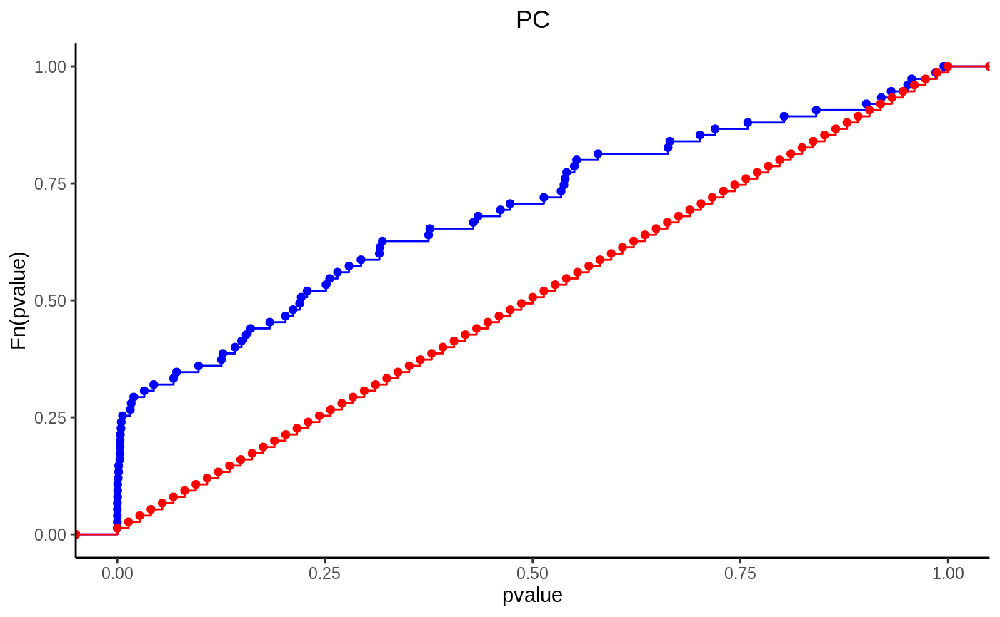

Enrichment Analysis
enrichment.Rmdlibrary(HTSet) #> #> Attaching package: 'HTSet' #> The following object is masked from 'package:stats': #> #> ecdf #> The following object is masked from 'package:graphics': #> #> barplot library(dplyr) #> #> Attaching package: 'dplyr' #> The following objects are masked from 'package:stats': #> #> filter, lag #> The following objects are masked from 'package:base': #> #> intersect, setdiff, setequal, union library(ggplot2)
Introduction
Enrichment analysis is often useful to test whether a group of genes/features over represented in a selection compare to the background. Two statstical methods, Fisher’s exact test and Kolmogorov-Smirnov, are commonly used to perform enrichment analysis on gene expression datasets.
Fisher’s exact test
Fisher’s exact test uses hypergeometric distribution to test the independence of two nominal variables. It is used to answer the type of questions such as, did I pick up more blue balls than what it should be. For example, 1000 genes were detected in an RNA-seq experiment, 300 of which were increased in expression. 200 of the genes belong to the same category of A, and within the category of genes, 90 were increased in expression. Now you want to test whether the category A is somehow special from the background. In other words, does my treatment specially increase the expression of gene set A. We let \(N\) being the total number of genes tested (1000), \(m\) the number of genes in category A (200), \(k\) the number of genes increased in expression (300), and \(x\) the number of genes in category A and increased in expression (90). The contingency table can be drawn as below.
| increased in expression | not increased in expression | |
|---|---|---|
| gene category A | 90 (x) | 110 (m-x) |
| not gene category A | 210 (k-x) | 590 (N-m-(k-x)) |
The Fisher’s exact test can be done using the fisher.test function in package stats
fisher.test(matrix(c(90, 110, 210, 590), nrow = 2), alternative = "greater") #> #> Fisher's Exact Test for Count Data #> #> data: matrix(c(90, 110, 210, 590), nrow = 2) #> p-value = 3.437e-07 #> alternative hypothesis: true odds ratio is greater than 1 #> 95 percent confidence interval: #> 1.732601 Inf #> sample estimates: #> odds ratio #> 2.296597
The p-value is \(3.437\times10^{-07}\), so we reject the null hypothesis and accept that the genes that were increased by treatment are enriched in gene set A.
Kolmogorov-Smirnov
While in Fisher’s exact test, the gene list is devided into a 2x2 contigency table, thus user usually need to define a p-value cutoff in order to tell whether a gene is increased in expression, or more often, differentially expressed (undirectional). Kolmogorov-Smirnov test, in the other hand, does not need such a cut-off. Kolmogorov-Smirnov test is a non-parametric test tries to determine if two population are different. Kolmogorov-Smirnov test can be used to answer different types of questions. And because of it’s non-parametric nature, it does not require data fitting any particular distribution. Kolmogorov-Smirnov test can be adopted to perform gene enrichment analysis by comparing the differential analysis p-values to the background p-values. In this case, the question to answer is that, does the genes in set have smaller p-values than random in an experiment. For example, we have 100 genes in a gene set, and we performed differential analysis with linear model and got the p-values.
Here we simulate 100 fake p-values. Although only 13 genes have the p-value smaller than 0.05, but it seems that a lot of genes are enriched in the range of p-values that are smaller than 0.4. We can test that whether there are more genes with smaller p-values than larger p-values using the Kolmogorov-Smirnov test by comparing the pvalues to an arithmetic sequence between 0 and 1.
ks.test(pvals, seq(from = 0, to = 1, len = 100)) #> #> Two-sample Kolmogorov-Smirnov test #> #> data: pvals and seq(from = 0, to = 1, len = 100) #> D = 0.39, p-value = 4.959e-07 #> alternative hypothesis: two-sided
The difference between p-values and the arithmetic sequence is pretty clear in the ecdf plot below.

Enrichment analysis with HTSet
Enrichment analysis is implemented in the enrichment_test() function in HTSet package. The basic usage is:
enrichment_test(object, fit, group, test, alternative, p.cutoff)
The object must be a HTSet. fit is a ModelFit object, returned by the model_fit() function. Thus the enrichment_test() must be called after model_fit(). group is the categorical variable in the fdata slot of object. This can be gene type, protein, or metabolite group. alternative can be one from greater, less, two.sided, or both. p.cutoff is the p-value cutoff used by fet.
We are going to use a lipidomics data set for demonstration. The dataset lipidome is the result of a lipidomics analysis on isolated HDL from 10 human subjects in a 2x2 randomized cross-over study. The study was published on Metabolomics, 2019 (doi: 10.1007/s11306-019-1579-1).
FET with HTSet
We first run a differential analysis using the model_fit() function.
lpd = transform_by_sample(lipidome, function(x) log(x/sum(x))) design = model.matrix(~Treatment * Timepoint + Subject, data = lpd$pdata) fit = model_fit(lpd, design, "TreatmentMed:TimepointPre", "limma") #> Loading required namespace: limma
We are now going to test whether the lipid species with p-value smaller than 0.05 are enriched in a certain lipid class using Fisher’s exact test.
en = enrichment_test(lpd, fit, "class", "fet", "two.sided", 0.05) en$pval #> Cer PC PE SM CE Cholesterol #> 0.97369929 0.05403956 0.55526502 0.99862063 0.32702442 1.00000000 #> DG LPC TG #> 1.00000000 1.00000000 0.22128250
We can also test whether the lipid species that are higher in treatment group are enriched in any lipid class by setting the alternative to greater.
en = enrichment_test(lpd, fit, "class", "fet", "greater", 0.05) en$pval #> Cer PC PE SM CE Cholesterol #> 1.00000000 0.01701191 0.39569651 1.00000000 1.00000000 1.00000000 #> DG LPC TG #> 1.00000000 1.00000000 0.08017662
In the example below, the p-value cutoff is wet to 1. The question anwered now is thwether lipid species that are higher in treatment group, regardless of the p-value, are enriched in any lipid class.
en = enrichment_test(lpd, fit, "class", "fet", "greater", 1) en$pval #> Cer PC PE SM CE Cholesterol #> 0.28500845 0.02157524 0.28200000 0.99998451 0.99973541 1.00000000 #> DG LPC TG #> 0.86404455 0.93653558 0.04777647
barplot(en) #> Warning: Use of `df$x` is discouraged. Use `x` instead.
By setting alternative to both, both greater and less are tested.
en = enrichment_test(lpd, fit, "class", "fet", "both", 0.05) en$pval #> greater less #> Cer 1.00000000 0.406703869 #> PC 0.01701191 0.893884885 #> PE 0.39569651 1.000000000 #> SM 1.00000000 0.609709979 #> CE 1.00000000 0.002223897 #> Cholesterol 1.00000000 1.000000000 #> DG 1.00000000 1.000000000 #> LPC 1.00000000 1.000000000 #> TG 0.08017662 1.000000000
barplot(en)
KST with HTSet
Kolmogorov-Smirnov test is also implemented in enrichment_test() funciton.
en = enrichment_test(lpd, fit, group = "class", test = "kst", alternative = "two.sided") en$pval #> Cer PC PE SM CE Cholesterol #> 0.7165313106 0.0008645224 0.0381333265 0.0474718181 0.6065306597 1.0000000000 #> DG LPC TG #> 0.6065306597 0.4493289641 0.0201767202
ecdf(en, "PC")
